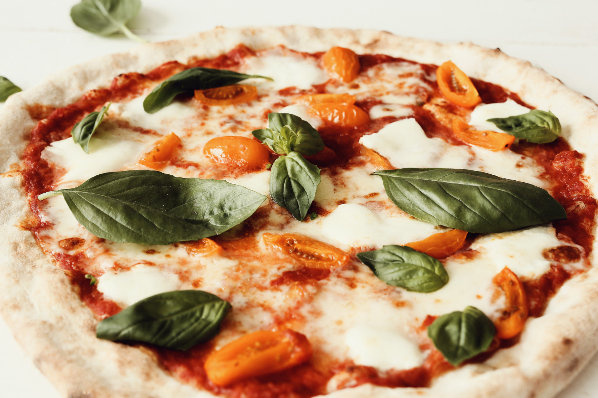

Inicio
Pizza Napolitana

Descripción
La pizza napolitana es una joya culinaria de la gastronomía italiana, reconocida por su sencillez y autenticidad. Se caracteriza por una masa fina, suave y ligeramente elástica, que se hornea a altas temperaturas en un horno de leña, logrando bordes inflados y dorados con un centro delicadamente delgado.
La cobertura tradicional incluye una base de salsa de tomate fresca, mozzarella de búfala o fior di latte, albahaca fresca y un toque de aceite de oliva extra virgen, todo cuidadosamente seleccionado para resaltar los sabores naturales. Su equilibrio entre textura, aroma y sabor la convierte en un ícono mundial de la cocina artesanal.
Ingredientes
- 500 g de harina de trigo tipo 00 (o harina de fuerza)
- 325 ml de agua
- 10 g de sal
- 2 g de levadura seca (o 5 g de levadura fresca)
- 1 cucharadita de azúcar (opcional, para activar la levadura)
- 15 ml de aceite de oliva virgen extra (opcional, para una masa más suave)
- 200 g de salsa de tomate natural (preferiblemente tomates San Marzano)
- 200 g de mozzarella de búfala o fior di latte
- Hojas frescas de albahaca (al gusto)
- Aceite de oliva virgen extra (para rociar)
- Sal al gusto
Elaboración paso a paso
- En un bol grande, mezcla la harina, la sal y, si usas levadura seca, añádela junto con el azúcar (si es opcional).
- Incorpora poco a poco el agua, mezclando con las manos o con una cuchara de madera hasta que todos los ingredientes estén integrados.
- Si usas levadura fresca, disuélvela en un poco de agua tibia antes de añadirla. Amasa la mezcla durante 8-10 minutos hasta obtener una masa lisa y elástica.
- Forma una bola con la masa y colócala en un recipiente ligeramente engrasado con aceite de oliva. Cubre con un paño húmedo o film transparente y deja reposar 2-3 horas a temperatura ambiente o hasta que doble su tamaño.
- Tritura los tomates pelados hasta obtener una textura uniforme. Añade una pizca de sal y un chorrito de aceite de oliva. Reserva.
- Escurre la mozzarella de búfala y córtala en trozos pequeños. Déjala reposar sobre papel absorbente para eliminar el exceso de líquido.
- Divide la masa en dos porciones y forma bolas. Déjalas reposar 20-30 minutos.
- En una superficie enharinada, estira la masa con las manos formando un círculo, dejando los bordes ligeramente más gruesos para formar el característico borde inflado de la pizza napolitana.
- Coloca la masa estirada sobre una pala para pizzas o papel para horno.
- Extiende una fina capa de salsa de tomate sobre el centro de la masa, dejando los bordes libres.
- Distribuye los trozos de mozzarella y coloca algunas hojas de albahaca fresca.
- Rocia con un chorrito de aceite de oliva virgen extra.
- Precalienta el horno a la máxima temperatura (250-300°C) durante al menos 30 minutos, idealmente con una piedra para pizza o una bandeja gruesa dentro.
- Desliza la pizza sobre la piedra caliente o bandeja y hornea durante 6-8 minutos, hasta que los bordes estén inflados y dorados, y el queso derretido.
- Retira la pizza del horno y sírvela inmediatamente para disfrutar de su auténtico sabor y textura. ¡Buon appetito!